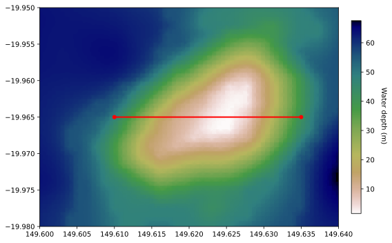
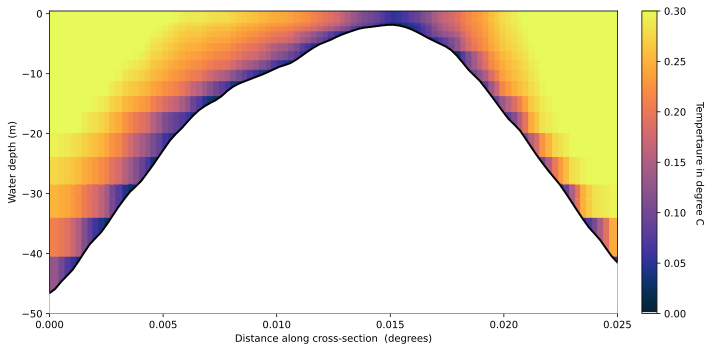

import os
import numpy as np
import pandas as pd
import netCDF4
from netCDF4 import Dataset
from scipy import ndimage
from scipy.spatial import cKDTree
import scipy.ndimage.filters as filters
from scipy.interpolate import griddata
from scipy.interpolate import RectBivariateSpline
from scipy.ndimage.filters import gaussian_filter
from scripts import hydroData as model
import cmocean
import datetime as dt
from pylab import *
import matplotlib.tri as triangle
import matplotlib.mlab as ml
import matplotlib.pyplot as plt
from matplotlib import cm
from mpl_toolkits.axes_grid1 import make_axes_locatable
# display plots in SVG format
%config InlineBackend.figure_format = 'svg'
%matplotlib inline
Read the dataset
outsimple = "378/outputs/out_simple.nc"
fdata = Dataset(outsimple, "r", format="NETCDF4")
ncdata = fdata.variables
# print(fdata.variables)
print(ncdata.keys())
# print()
# specific variable
print(ncdata['botz'])
dict_keys(['zc', 'longitude', 'latitude', 'botz', 'time', 'uav', 'vav', 'avg_speed', 'avg_dir', 'u', 'v', 'current_speed', 'current_dir', 'w', 'eta', 'wind_u', 'wind_v', 'wind_mag', 'wind_dir', 'patm', 'dens', 'dens_0', 'Kz', 'Vz', 'bottom_u', 'bottom_v', 'bottom_speed', 'bottom_dir', 'Cd', 'u1mean', 'u2mean', 'wmean', 'u1vmean', 'u2vmean', 'Kzmean', 'tke', 'diss', 'salt', 'temp', 'nhf', 'swr', 'lwr', 'lhf', 'shf', 'alerts_actual', 'alerts_cumulative', 'U1VH0', 'U2VH0', 'vol_cons', 'swr_bot_absorb', 'swr_attenuation', 'swr_transmission'])
<class 'netCDF4._netCDF4.Variable'>
float64 botz(j, i)
units: metre
long_name: Depth of sea-bed
standard_name: depth
missing_value: -99.0
positive: down
coordinates: latitude longitude
outside: 9999
unlimited dimensions:
current shape = (30, 50)
filling on, default _FillValue of 9.969209968386869e+36 used
recom = model.hydroData(ncdata)
recom.plotSurfaceVelocityDirection(tstep=2)
RECOM model :
- start time: 2018-Jun-08 02:00
- end time: 2018-Jun-11 02:00
- time steps 4
- vertical layers 25
- Longitudinal extent: 149.592011749 149.650463948
- Latitudinal extent: -19.982301338 -19.9476798075
res = 0.00005 # resolution in degrees
lon_min = 149.6
lon_max = 149.64
lat_min = -19.980
lat_max = -19.950
recom.buildGrid(res, lon_min, lon_max, lat_min, lat_max)
vname = 'current_speed'
tstep = 1
rTemp, minTemp, maxTemp = recom.grid4DVariable(tstep,vname)
# rcParams['figure.figsize'] = (8,5)
# ax = plt.gca()
# im = ax.imshow(np.flipud(rTemp[-1]),interpolation='nearest',cmap=cmocean.cm.thermal,
# extent=recom.Extent)
# cbar=colorbar(im, fraction=0.03, pad=0.04)
# cbar.set_label('Temperature degree C ', rotation=-90, labelpad=18)
# dtime = netCDF4.num2date(recom.time_var[tstep],recom.time_var.units)
# daystr = dtime.strftime('%Y-%b-%d %H:%M')
# title('Temperature, %s UTC+10' % (daystr));
# plt.show()
xo = 149.610
xm = 149.635
yo = -19.965
ym = -19.965
fig, ax = plt.subplots(1,1,figsize=(8,5))
im = ax.imshow(np.flipud(recom.zi),interpolation='nearest',cmap=cm.gist_earth_r,
extent=recom.Extent, aspect='auto',zorder=1)
plt.plot([xo,xm], [yo,ym], 'o', color='r', ms = 5,zorder=6)
ax.plot([xo,xm], [yo,ym],color='r', lw=2, zorder=10)
cbar=colorbar(im, fraction=0.03, pad=0.04)
cbar.set_label('Water depth (m) ', rotation=-90, labelpad=18)
fig.tight_layout()
plt.show()
plt.close()

pts = 100 # horizontal pts
dv = 0.025 # Vertical discretisation
sec1 = recom.buildSection(xo,xm,yo,ym,pts,dv)
recom.interpSection(sec1, rTemp)
recom.valueSection(sec1, minTemp)
fig, ax = plt.subplots(1,1,figsize=(10,5))
Extent = [sec1.dist.min(), sec1.dist.max(),recom.zc[0], recom.zc[-1]]
im = ax.imshow(np.flipud(sec1.data),interpolation='nearest',cmap=cmocean.cm.thermal,
vmin=0,vmax=0.3, extent=Extent, aspect='auto',zorder=1)
# vmin=minTemp,vmax=maxTemp, extent=Extent, aspect='auto',zorder=1)
ax.plot(sec1.dist,-sec1.base,color='k',lw=2,zorder=10)
ax.fill_between(sec1.dist, -200, -sec1.base, color='w',zorder=8) #lightgrey
plt.xlim(sec1.dist.min(),sec1.dist.max())
plt.ylim(-50,recom.zc[-1])
plt.xlabel('Distance along cross-section (degrees)')
plt.ylabel('Water depth (m)')
cbar=colorbar(im, fraction=0.03, pad=0.04)
cbar.set_label(' Tempertaure in degree C', rotation=-90, labelpad=18)
# plt.colorbar(im,cax=cax)
fig.tight_layout()
# plt.savefig('shelfcurrent'+str(step)+'.png',dpi=900)
plt.show()
plt.close()

pts = 100 # horizontal pts
dv = 0.025 # Vertical discretisation
def buildSection(xo,xm,yo,ym,pts,dv,lati,loni,lonlati,zi,zc,nlay,rdata):
if xm == xo:
ysec = np.linspace(yo, ym, pts)
xsec = np.zeros(pts)
xsec.fill(xo)
elif ym == yo:
xsec = np.linspace(xo, xm, pts)
ysec = np.zeros(pts)
ysec.fill(yo)
else:
a = (ym-yo)/(xm-xo)
b = yo - a * xo
xsec = np.linspace(xo, xm, pts)
ysec = a * xsec + b
dist = np.sqrt(( xsec - xo )**2 + ( ysec - yo )**2)
secPts = np.dstack([xsec.flatten(), ysec.flatten()])[0]
# Interpolate variables on cross-section position:
rect_B_spline1 = RectBivariateSpline(lati[:,0], loni[0,:], zi)
tmp = rect_B_spline1.ev(ysec, xsec)
secElev = filters.gaussian_filter1d(tmp,sigma=1)
secData = []
zpoints = np.zeros((pts,nlay))
secX = np.zeros((pts,nlay))
secY = np.zeros((pts,nlay))
secVal = np.zeros((pts,nlay))
for k in range(nlay):
zpoints[:,k] = zc[k]
tmp = griddata(lonlati, rdata[k].flatten(), secPts, method='nearest')
secData.append(tmp)
secX[:,k] = dist
secY[:,k] = zpoints[:,k]
secVal[:,k] = secData[k]
vertSec = np.column_stack((secX.flatten(),secY.flatten()))
dataSec = secVal.flatten()
# Create a regular cross-section grid
zmin = zc[0]
zmax = zc[-1]
nv = int((zmax - zmin)/dv+1)
nd = int((dist.max() - dist.min())/res+1)
nvi = np.linspace(zmin, zmax, nv)
ndi = np.linspace(dist.min(), dist.max(), nd)
ndi, nvi = np.meshgrid(ndi, nvi)
ndvi = np.dstack([ndi.flatten(), nvi.flatten()])[0]
tree = cKDTree(vertSec)
distances, indices = tree.query(ndvi, k=3)
tmp_vals = dataSec[indices]
IDs = np.where(distances>0)
wght = np.zeros(distances.shape)
wght[IDs] = 1./distances[IDs]
secDatai = np.average(tmp_vals,weights=wght, axis=1)
onIDs = np.where(distances[:,0] == 0)[0]
if len(onIDs) > 0:
secDatai[onIDs] = tmp_vals[indices[onIDs,0],0]
secDatai = np.reshape(secDatai,(nv,nd))
existingvalues = np.where(secDatai.flatten()>=minData)[0]
maskvalues = np.where(secDatai.flatten()<minData)[0]
tree = cKDTree(ndvi[existingvalues])
distances, indices = tree.query(ndvi[maskvalues], k=30)
reg_data_vals = secDatai.flatten()[existingvalues][indices]
secDatainterp = np.average(reg_data_vals,weights=(1./distances), axis=1)
newDatai = np.zeros(len(secDatai.flatten()))
newDatai[existingvalues] = secDatai.flatten()[existingvalues]
newDatai[maskvalues] = secDatainterp
nsecDatai = np.reshape(newDatai,(nv,nd))
Coordinates
# Get lon,lat coordinates for nodes (depth)
lat = ncdata['latitude'][:].filled(fill_value=0.)
lon = ncdata['longitude'][:].filled(fill_value=0.)
Get mesh variable:
h = ncdata['botz'][:,:].filled(fill_value=0.)
zc = ncdata['zc'][:].filled(fill_value=0.)
nlay = len(zc)
Get time interval:
start = dt.datetime(1900,3,2,15,0,0)
end = dt.datetime.utcnow()
# Get desired time step
time_var = ncdata['time']
stime = netCDF4.date2index(start,time_var,select='nearest')
etime = netCDF4.date2index(end,time_var,select='nearest')
dtime = netCDF4.num2date(time_var[stime],time_var.units)
daystr = dtime.strftime('%Y-%b-%d %H:%M')
print('RECOM model start time: ',daystr)
dtime = netCDF4.num2date(time_var[etime],time_var.units)
daystr = dtime.strftime('%Y-%b-%d %H:%M')
print('RECOM model end time: ',daystr,'\n')
ntime = len(time_var)
print('Number of time steps',ntime)
print('Number of vertical layers',nlay)
Build regular grid
print('Longitude extent:',lon.min(),lon.max())
print('Latitude extent:',lat.min(),lat.max())
Define regular grid extent and resolution
res = 0.00005
lon_min = 149.6
lon_max = 149.64
lat_min = -19.980
lat_max = -19.950
nx = int((lon_max - lon_min)/res+1)
ny = int((lat_max - lat_min)/res+1)
loni = np.linspace(lon_min, lon_max, nx)
lati = np.linspace(lat_min, lat_max, ny)
loni, lati = np.meshgrid(loni, lati)
lonlati = np.dstack([loni.flatten(), lati.flatten()])[0]
Extent = [np.amin(loni), np.amax(loni), np.amin(lati), np.amax(lati)]
lonlat = np.column_stack((lon.flatten(),lat.flatten()))
tree = cKDTree(lonlat)
bathy = h.flatten()
distances, indices = tree.query(lonlati, k=3)
z_vals = bathy[indices]
zi = np.average(z_vals,weights=(1./distances), axis=1)
zi = np.reshape(zi,(ny,nx))
Get the variable you want to plot:
vname = 'Temperature'
dataVar = ncdata['temp']
step = 0
dataVar = ncdata[vname]
dataVar
Interpolate RECOM variable on the regular grid
def interpData(dataVar,step):
iData = []
minData = 10000.
maxData = -10000.
for k in range(nlay):
var = dataVar[step,k,:,:].flatten()
minData = min(minData,var.min())
maxData = max(maxData,var.max())
vals = var[indices]
vali = np.average(vals,weights=(1./distances), axis=1)
onIDs = np.where(distances[:,0] == 0)[0]
if len(onIDs) > 0:
vali[onIDs] = vals[indices[onIDs,0],0]
vali = np.reshape(vali,(ny,nx))
iData.append(vali)
return iData, minData, maxData
rdata, minData, maxData = interpData(dataVar[:],step)
rcParams['figure.figsize'] = (10,8)
ax = plt.gca()
im = ax.imshow(np.flipud(zi),interpolation='nearest',cmap=cm.gist_earth_r,
extent=Extent)
cbar=colorbar(im, fraction=0.03, pad=0.04)
cbar.set_label('Water depth (m) ', rotation=-90, labelpad=18)
plt.show()
rcParams['figure.figsize'] = (10,8)
ax = plt.gca()
im = ax.imshow(np.flipud(rdata[-1]),interpolation='nearest',cmap=cmocean.cm.thermal,
extent=Extent)
cbar=colorbar(im, fraction=0.03, pad=0.04)
cbar.set_label(vname+' '+dataVar.units, rotation=-90, labelpad=18)
plt.show()
Define cross-section position
xo = 149.610
xm = 149.635
yo = -19.975
ym = -19.952
fig, ax = plt.subplots(1,1,figsize=(10,5))
im = ax.imshow(np.flipud(zi),interpolation='nearest',cmap=cm.gist_earth_r,
extent=Extent, aspect='auto',zorder=1)
plt.plot([xo,xm], [yo,ym], 'o', color='r', ms = 5,zorder=6)
ax.plot([xo,xm], [yo,ym],color='r', lw=2, zorder=10)
cbar=colorbar(im, fraction=0.03, pad=0.04)
cbar.set_label('Water depth (m) ', rotation=-90, labelpad=18)
fig.tight_layout()
plt.show()
plt.close()
Build section position
pts = 100 # horizontal pts
dv = 0.025 # Vertical discretisation
def buildSection(xo,xm,yo,ym,pts,dv,lati,loni,lonlati,zi,zc,nlay,rdata):
if xm == xo:
ysec = np.linspace(yo, ym, pts)
xsec = np.zeros(pts)
xsec.fill(xo)
elif ym == yo:
xsec = np.linspace(xo, xm, pts)
ysec = np.zeros(pts)
ysec.fill(yo)
else:
a = (ym-yo)/(xm-xo)
b = yo - a * xo
xsec = np.linspace(xo, xm, pts)
ysec = a * xsec + b
dist = np.sqrt(( xsec - xo )**2 + ( ysec - yo )**2)
secPts = np.dstack([xsec.flatten(), ysec.flatten()])[0]
# Interpolate variables on cross-section position:
rect_B_spline1 = RectBivariateSpline(lati[:,0], loni[0,:], zi)
tmp = rect_B_spline1.ev(ysec, xsec)
secElev = filters.gaussian_filter1d(tmp,sigma=1)
secData = []
zpoints = np.zeros((pts,nlay))
secX = np.zeros((pts,nlay))
secY = np.zeros((pts,nlay))
secVal = np.zeros((pts,nlay))
for k in range(nlay):
zpoints[:,k] = zc[k]
tmp = griddata(lonlati, rdata[k].flatten(), secPts, method='nearest')
secData.append(tmp)
secX[:,k] = dist
secY[:,k] = zpoints[:,k]
secVal[:,k] = secData[k]
vertSec = np.column_stack((secX.flatten(),secY.flatten()))
dataSec = secVal.flatten()
# Create a regular cross-section grid
zmin = zc[0]
zmax = zc[-1]
nv = int((zmax - zmin)/dv+1)
nd = int((dist.max() - dist.min())/res+1)
nvi = np.linspace(zmin, zmax, nv)
ndi = np.linspace(dist.min(), dist.max(), nd)
ndi, nvi = np.meshgrid(ndi, nvi)
ndvi = np.dstack([ndi.flatten(), nvi.flatten()])[0]
tree = cKDTree(vertSec)
distances, indices = tree.query(ndvi, k=3)
tmp_vals = dataSec[indices]
IDs = np.where(distances>0)
wght = np.zeros(distances.shape)
wght[IDs] = 1./distances[IDs]
secDatai = np.average(tmp_vals,weights=wght, axis=1)
onIDs = np.where(distances[:,0] == 0)[0]
if len(onIDs) > 0:
secDatai[onIDs] = tmp_vals[indices[onIDs,0],0]
secDatai = np.reshape(secDatai,(nv,nd))
existingvalues = np.where(secDatai.flatten()>=minData)[0]
maskvalues = np.where(secDatai.flatten()<minData)[0]
tree = cKDTree(ndvi[existingvalues])
distances, indices = tree.query(ndvi[maskvalues], k=30)
reg_data_vals = secDatai.flatten()[existingvalues][indices]
secDatainterp = np.average(reg_data_vals,weights=(1./distances), axis=1)
newDatai = np.zeros(len(secDatai.flatten()))
newDatai[existingvalues] = secDatai.flatten()[existingvalues]
newDatai[maskvalues] = secDatainterp
nsecDatai = np.reshape(newDatai,(nv,nd))
Interpolate variables on cross-section position:
rect_B_spline1 = RectBivariateSpline(lati[:,0], loni[0,:], zi)
tmp = rect_B_spline1.ev(ysec, xsec)
secElev = filters.gaussian_filter1d(tmp,sigma=1)
secData = []
zpoints = np.zeros((pts,nlay))
secX = np.zeros((pts,nlay))
secY = np.zeros((pts,nlay))
secVal = np.zeros((pts,nlay))
for k in range(nlay):
zpoints[:,k] = zc[k]
tmp = griddata(lonlati, rdata[k].flatten(), secPts, method='nearest')
secData.append(tmp)
secX[:,k] = dist
secY[:,k] = zpoints[:,k]
secVal[:,k] = secData[k]
vertSec = np.column_stack((secX.flatten(),secY.flatten()))
dataSec = secVal.flatten()
Create a regular cross-section grid
zmin = zc[0]
zmax = zc[-1]
nv = int((zmax - zmin)/dv+1)
nd = int((dist.max() - dist.min())/res+1)
nvi = np.linspace(zmin, zmax, nv)
ndi = np.linspace(dist.min(), dist.max(), nd)
ndi, nvi = np.meshgrid(ndi, nvi)
ndvi = np.dstack([ndi.flatten(), nvi.flatten()])[0]
tree = cKDTree(vertSec)
distances, indices = tree.query(ndvi, k=3)
tmp_vals = dataSec[indices]
IDs = np.where(distances>0)
wght = np.zeros(distances.shape)
wght[IDs] = 1./distances[IDs]
secDatai = np.average(tmp_vals,weights=wght, axis=1)
onIDs = np.where(distances[:,0] == 0)[0]
if len(onIDs) > 0:
secDatai[onIDs] = tmp_vals[indices[onIDs,0],0]
secDatai = np.reshape(secDatai,(nv,nd))
existingvalues = np.where(secDatai.flatten()>=minData)[0]
maskvalues = np.where(secDatai.flatten()<minData)[0]
tree = cKDTree(ndvi[existingvalues])
distances, indices = tree.query(ndvi[maskvalues], k=30)
reg_data_vals = secDatai.flatten()[existingvalues][indices]
secDatainterp = np.average(reg_data_vals,weights=(1./distances), axis=1)
newDatai = np.zeros(len(secDatai.flatten()))
newDatai[existingvalues] = secDatai.flatten()[existingvalues]
newDatai[maskvalues] = secDatainterp
nsecDatai = np.reshape(newDatai,(nv,nd))
fig, ax = plt.subplots(1,1,figsize=(10,5))
Extent = [dist.min(), dist.max(), zmin, zmax]
im = ax.imshow(np.flipud(nsecDatai),interpolation='nearest',cmap=cmocean.cm.thermal,
vmin=minData,vmax=maxData, extent=Extent, aspect='auto',zorder=1)
ax.plot(dist,-secElev,color='k',lw=2,zorder=10)
# for k in range(len(zc)):
# plt.plot(dist, zpoints[:,k], 'o', color='w', ms = 0.3,zorder=6)
ax.fill_between(dist, -200, -secElev, color='w',zorder=8) #lightgrey
plt.xlim(dist.min(),dist.max())
plt.ylim(-50,zmax)
plt.xlabel('Distance along cross-section (degrees)')
plt.ylabel('Water depth (m)')
cbar=colorbar(im, fraction=0.03, pad=0.04)
cbar.set_label(vname+' '+dataVar.units, rotation=-90, labelpad=18)
plt.colorbar(im,cax=cax)
fig.tight_layout()
# plt.savefig('shelfcurrent'+str(step)+'.png',dpi=900)
plt.show()
plt.close()